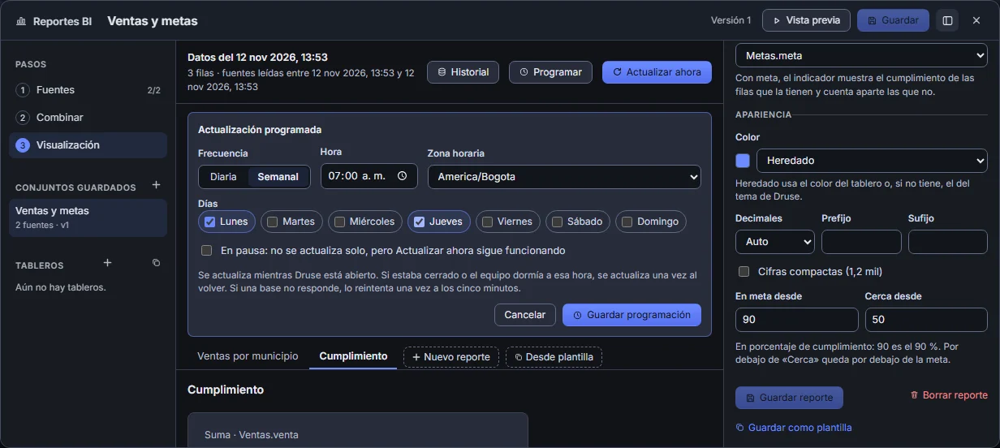
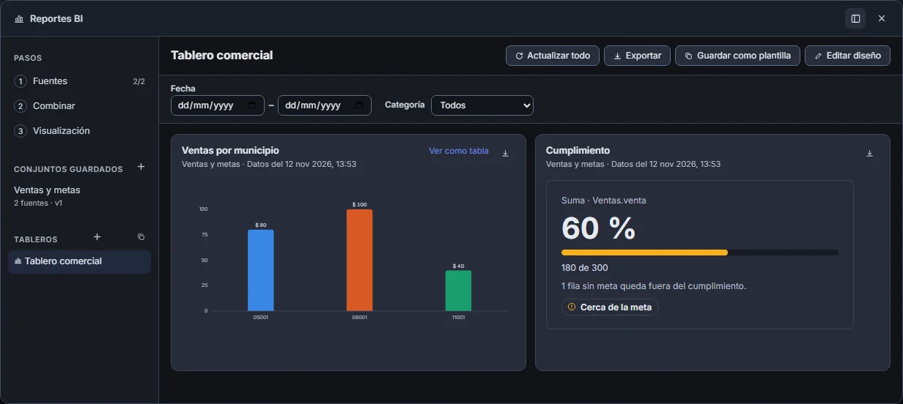
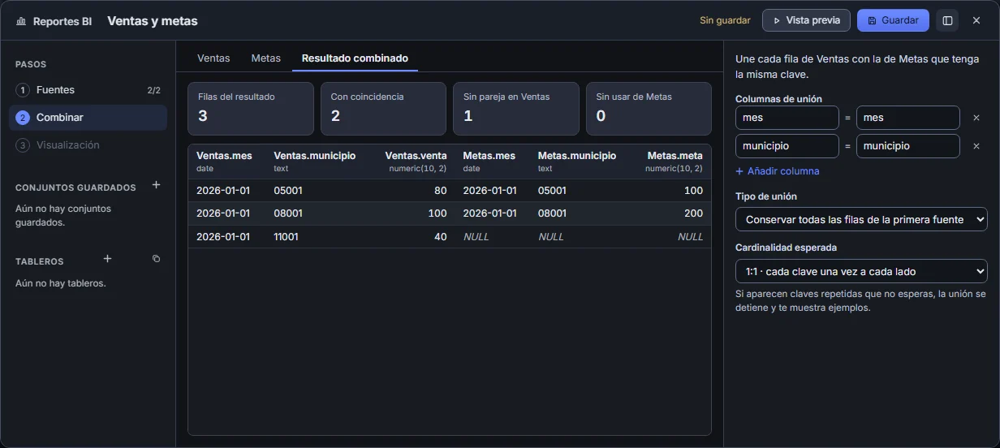

REPORTES BI En desarrollo
El avance de Reportes BI.
Reportes que combinan datos de distintas bases, tableros con filtros y actualizaciones programadas. Aquí queda lo que ya funciona en desarrollo, de lo más reciente a lo más antiguo.
-
Más motores y mensajes en tu idioma
Las fuentes pueden venir de SQL Server, PostgreSQL, MySQL, Oracle y SQLite, y cruzarse entre sí. Cada motor está comprobado contra un servidor real: tipos, nulos, límite de filas y cancelación. Informix está implementado y pendiente de comprobar. Los avisos salen en español o en inglés.
-
Actualizaciones programadas
Cada conjunto de datos se puede actualizar a diario o los días elegidos, a una hora y en una zona horaria. Si Druse estaba cerrado o el equipo dormía, se actualiza una vez al volver; si una base no responde, lo reintenta. El historial cuenta cada intento y se puede ver y liberar el espacio de los datos guardados.

Captura de Druse Programación semanal sobre el indicador de cumplimiento. -
Tableros, diseño, plantillas y exportación
Tableros con varias páginas, filtros compartidos de fecha y categoría, y filtrar al pulsar una barra. Colores, formato de números y umbrales por reporte. Un diseño se guarda como plantilla y se aplica a otro conjunto con columnas distintas. Un tablero o un panel se exporta a Excel, PDF o CSV con los filtros activos.

Captura de Druse Tablero con dos paneles y sus filtros. -
Reportes guardados
Tabla, barras, línea e indicador con meta sobre el último resultado guardado, que se consulta con las bases desconectadas. Si una actualización falla, se conservan los datos anteriores y se dice por qué.
-
Constructor SQL y visual
Una o dos fuentes por conjunto, cada una en SQL o con el compositor visual, su unión por una o varias columnas y una vista previa con diagnósticos por fuente.

Captura de Druse Ventas y metas unidas por mes y municipio. -
Cruce entre SQL Server y PostgreSQL
La primera prueba: ventas en SQL Server y metas en PostgreSQL, cruzadas en Druse. Tres municipios, 220 en ventas y un 60 % de cumplimiento, con el municipio sin meta aparte. Los códigos conservan sus ceros iniciales y una clave duplicada detiene la unión.